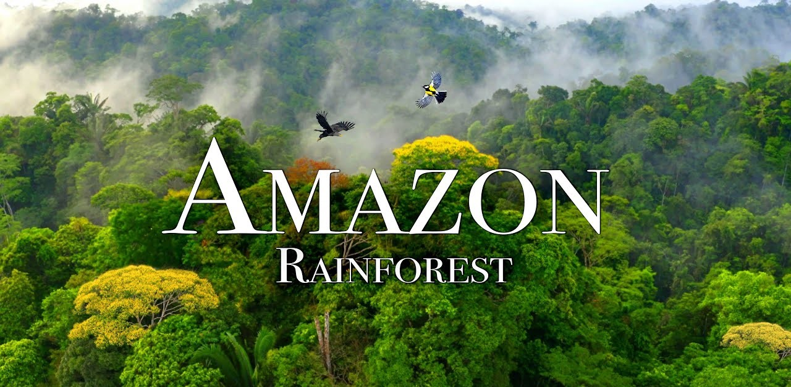
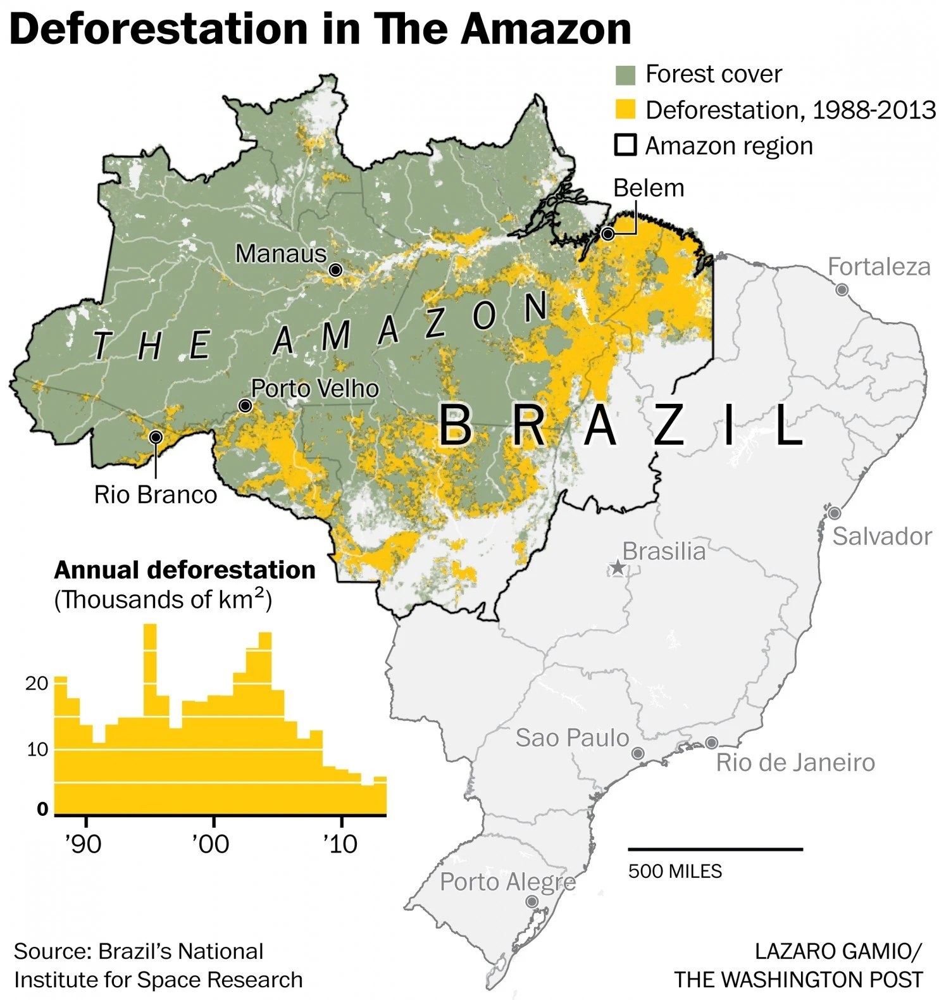
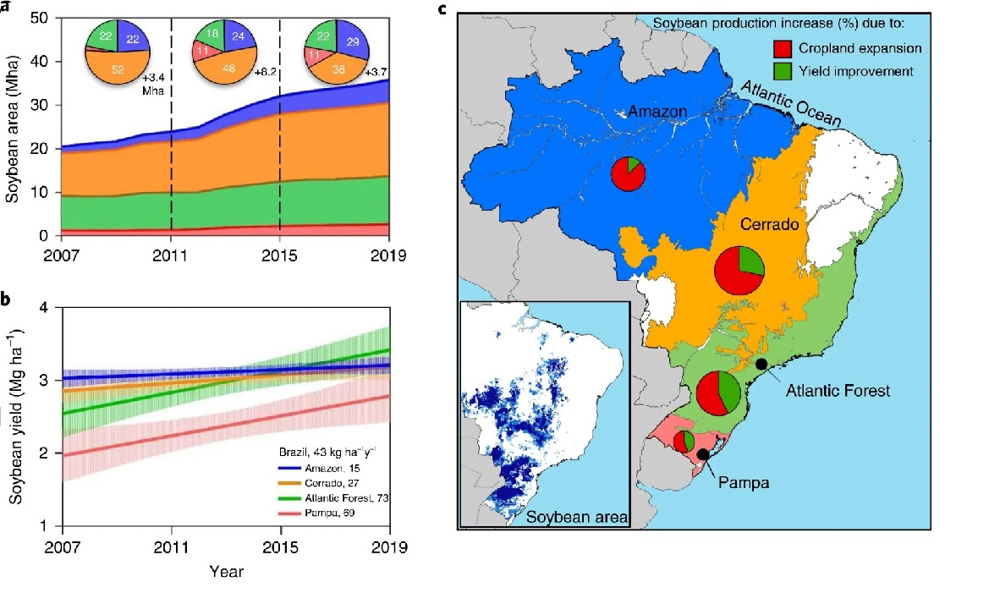

L'Amazonie : la poumon du monde
Immense, vitale et menacée, l’Amazonie se trouve aujourd’hui au croisement de deux logiques : le développement économique et la protection d’un écosystème essentiel.

Comprendre l’Amazonie, ce n’est pas seulement parler d’une forêt. C’est aussi analyser un espace de vie, de ressources, de conflits et de choix collectifs pour l’avenir.
5 millions+
de km² de forêt tropicale
L’Amazonie constitue la plus vaste forêt tropicale du monde. Sa taille exceptionnelle en fait un espace essentiel pour la biodiversité, le climat et les équilibres écologiques mondiaux.
1960–1970
période de bascule historique
C’est à cette époque que la région s’ouvre davantage aux routes, aux investissements et aux projets d’exploitation, marquant un tournant majeur dans l’histoire de la déforestation amazonienne.
Enjeu mondial
climat, biodiversité, populations
L’Amazonie concerne toute la planète : elle influence les régimes de pluie, abrite une biodiversité exceptionnelle et demeure un espace de vie pour de nombreuses communautés locales et autochtones.
Repères historiques
Avant le XXᵉ siècle
Une région longtemps isolée, principalement habitée par des peuples autochtones.
Années 1960–1970
Ouverture de la région, construction de routes et intégration économique progressive.
Années 1990
Montée de la prise de conscience internationale autour du climat et de la biodiversité.
Aujourd’hui
Une tension persistante entre exploitation des ressources et protection de la forêt.
Pendant des siècles, l’Amazonie est restée relativement préservée grâce à son isolement géographique. Elle constituait un espace de vie pour de nombreux peuples autochtones, dont les modes de vie reposaient sur une relation étroite avec la nature. La forêt n’était pas seulement un territoire : elle était aussi un cadre culturel, spirituel et écologique.
À partir de la seconde moitié du XXᵉ siècle, la situation change profondément. Dans les années 1960 et 1970, plusieurs gouvernements, en particulier au Brésil, encouragent l’intégration de l’Amazonie au développement économique national. La construction d’infrastructures majeures, comme la Transamazonienne, facilite l’arrivée de colons, d’investisseurs et d’entreprises.
Cette ouverture accélère l’exploitation des ressources. L’élevage bovin, l’agriculture intensive, l’exploitation du bois et les activités minières deviennent les principaux moteurs de transformation de la forêt. Si ces activités génèrent de la croissance et des emplois, elles provoquent aussi une déforestation massive, une perte de biodiversité et une perturbation des équilibres climatiques.


À partir des années 1990, la communauté internationale prend davantage conscience du rôle crucial de l’Amazonie. La forêt participe à la régulation du climat, absorbe d’importantes quantités de dioxyde de carbone et influence les régimes de précipitations à l’échelle régionale et mondiale. Face à l’ampleur des dégâts, différentes mesures de protection sont mises en place : parcs naturels, reconnaissance de territoires autochtones et politiques environnementales plus strictes.
Malgré cela, la situation reste préoccupante. Les pressions économiques persistent, portées par la demande mondiale en matières premières agricoles et minières. L’Amazonie demeure ainsi au cœur d’un dilemme majeur : comment soutenir le développement économique tout en préservant un écosystème indispensable à la planète ?
« L’Amazonie ne représente pas seulement un espace à exploiter, mais un équilibre vivant à comprendre et à préserver. »
Ainsi, l’histoire de l’Amazonie illustre une tension constante entre exploitation et conservation. Trouver un équilibre durable entre ces deux enjeux représente aujourd’hui l’un des grands défis environnementaux et économiques du XXIᵉ siècle.